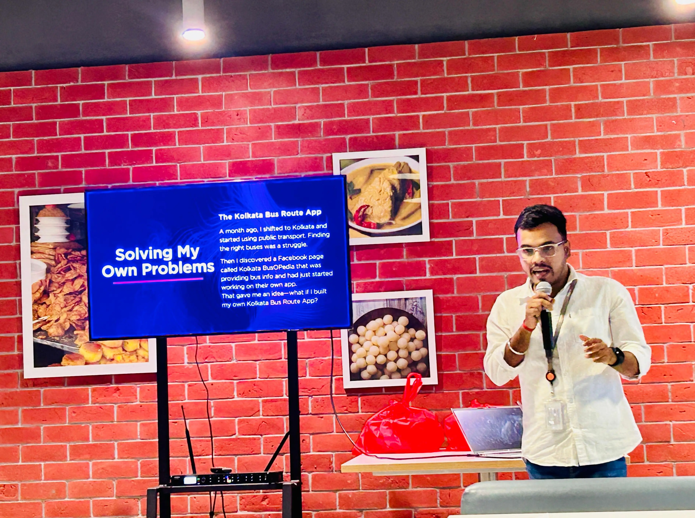
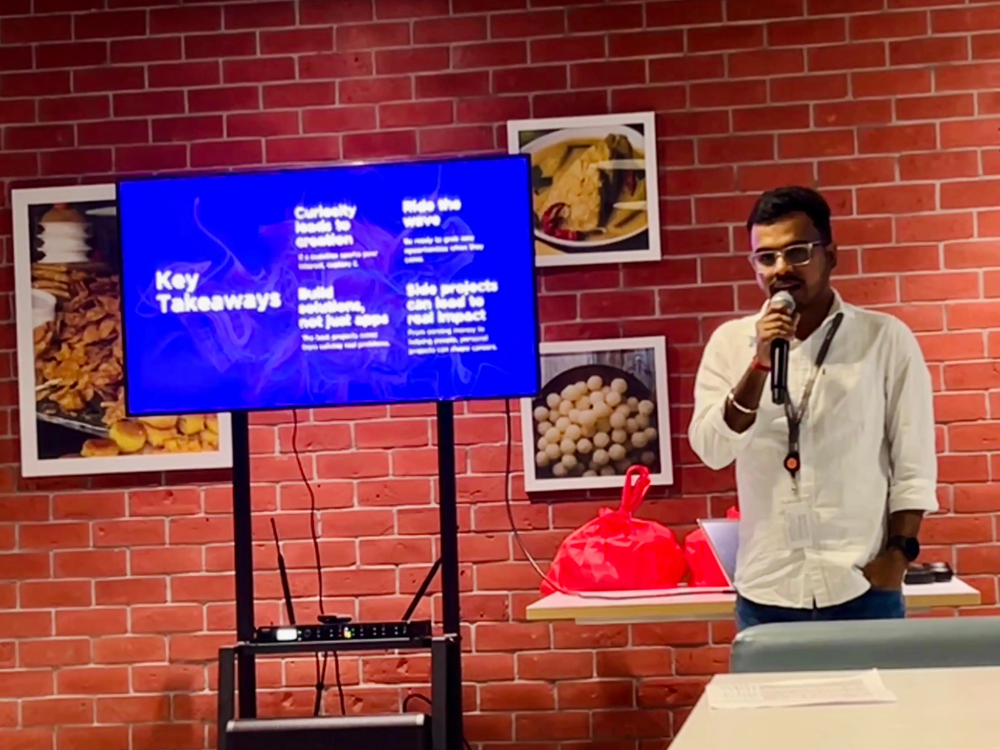
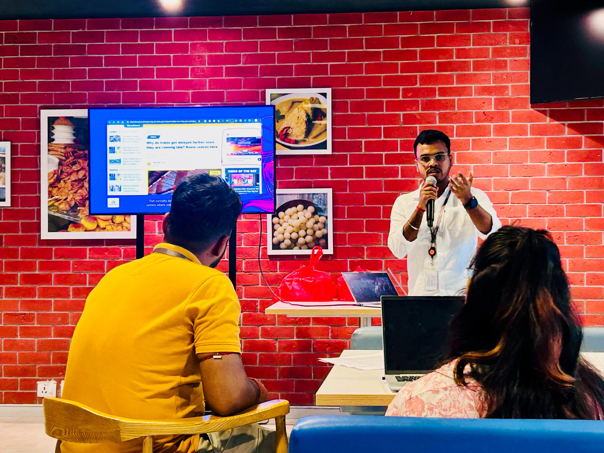

KIIT University Presentation - Odia GenAI Community Showcase
Public Speaking
I recently had the opportunity to speak at **HashedIn Inspire Talk**, where I shared my journey of leveraging curiosity, experimenting with ideas, and turning them into real-world projects.



Humbled and proud to have represented the Odia GenAI community at KIIT University, showcasing web and mobile platforms developed for our open-source mission to bring Generative AI to the Odia language.
Technology meets language, culture, and purpose. Contributing to the movement where innovation serves communities, preserving and empowering regional languages through Generative AI.
KIIT University Presentation - Odia GenAI Community Showcase